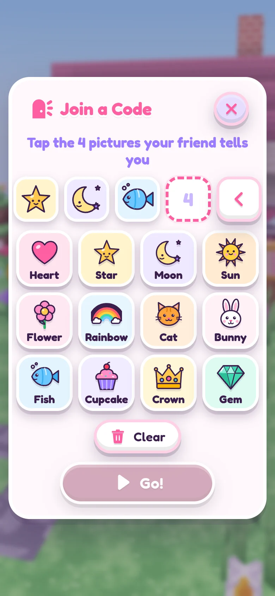

The short version
- No chat typing. Players can only tap one of 16 fixed friendly phrases.
- A walkie-talkie, only if you say so. Voice is off until a grown-up turns it on for this device with a multiplication question. Then it's hold-to-talk, heard only by friends in the same game who have theirs on too, and never recorded. The camera is never used.
- No accounts. No sign-up, no emails, no passwords.
- No ads and nothing to buy. Sparkle Coins are earned by playing and can't be bought.
- Worlds stay on your device. The server doesn't store worlds, names, pictures, messages or voices.
- A walkie-talkie, only if you say so. Voice is off until a grown-up switches it on for each child on the Family page (on a device that isn't signed in yet: in Settings, with a multiplication question, for that device). Then it's hold-to-talk, heard only by friends in the same game who have theirs on too, and never recorded. The camera is never used.
- A walkie-talkie, only if you say so. Voice is off until a grown-up switches it on for each child on the Family page. Then it's hold-to-talk, heard only by friends in the same game who have theirs on too, and never recorded. The camera is never used.
- Accounts are for grown-ups. A grown-up signs in with an email code. Kids never type an email or a password: each child is a nickname you choose.
- No ads, and nothing to buy inside the game. The Glimmer World Membership ({{SW_PRICE_TEXT}}) is the only thing that costs money: one membership for the whole family, with everything included. A grown-up starts it on the Family page; kids never see a price. Sparkle Coins are earned by playing and can't be bought.
- What is saved on our server, you control. With the membership, each child's nickname, avatar picture, progress and worlds are kept in your family's cloud copy. You can see, download and delete them on the Family page. Messages and voices are never saved.
- Nothing scary. No monsters, no fighting, nobody gets hurt, nothing to lose.
Playing with friends

One player taps Play with Friends and then Make a Code (or Menu and then Play Together inside a world). Four big pictures appear, for example heart, star, moon, cat. There are 12 pictures, so there are 20,736 possible codes.
A friend opens this same website on their own device, taps Play now, Play with Friends and Join a Code, taps the same 4 pictures, and taps Go!.
Knowing the code is not enough. The player who made the code (the host) sees a card, "Mia wants to play!", and must tap Let in! for each friend, one at a time. Not now says no.
With family accounts, a child plays together only when a grown-up switched Play with friends on for that child on the Family page, and each friend's family has a Glimmer World Membership too; the server checks both. Until {{SW_REQUIRED_FROM}}, devices that aren't signed in can still play together as before, with each other: the server never puts them in the same game as a signed-in child.
Family accounts: a child plays together only when a grown-up switched Play with friends on for that child on the Family page, and each friend's family has a Glimmer World Membership too. The server checks both, and a switch turned off reaches a game in progress within a second.
- Up to 4 players can be in one world.
- The host can Send home any friend at any time. That friend can't knock again in that game.
- Careful players is on from the start: friends can build and change only their own things and the natural ground, not the host's houses and furniture.
- Players can build can be switched off, so friends can only look around and play.
- The host can Undo building for one friend, and a copy of the host's world from before friends came is kept on the host's device (Before friends).
- Stop playing ends the game for everyone. The host's world is saved on the host's device.
The friends in the Bag (the girls and boys you can invite to live in your world) are part of the game, not real people. Real people are always called Players.
Talking
There is no typing to other players at all. Players can tap one of these 16 phrases, and do emotes like waving and dancing:
- Hi!
- Come here!
- Look!
- Follow me!
- Let's build!
- Wow!
- So pretty!
- Thank you!
- Help please!
- Let's dance!
- Race you!
- Yes!
- No thanks
- Oops!
- Good night!
- Bye!
Only a number for the phrase travels to the other devices; each device shows the words from its own list. The only things a player types are names (their own, their pets' and their worlds'), and names go through a word filter before other players see them.
The walkie-talkie is the only way to hear each other, and it starts off.
- A grown-up turns it on in Settings, Walkie-talkie (grown-ups), by answering a multiplication question. It's for that device only: each family decides for their own child's device, and turning it off is one tap.
- A grown-up switches it on for each child on the Family page, next to Play with friends (which it needs). It becomes available after your first payment, which is how we confirm that a grown-up said yes. Turning it off there reaches a game in progress within a second.
- On a device that isn't signed in yet, it works as before: a grown-up turns it on in Settings, Walkie-talkie (grown-ups), by answering a multiplication question, for that device only.
- A child holds the walkie button to talk, up to 15 seconds at a time, one friend at a time. The microphone turns off the moment they let go.
- Only friends in the same game, let in by the host, who have their walkie on too can hear. A device with its walkie off hears nothing and can't talk, and everyone can see who has it on.
- The host can mute any friend, or everyone. Every player can mute anyone just for themselves.
- Voices travel live through the game's server and are never recorded, stored or logged.
- It works only on this website version of the game.
For early readers, the game can read its own words out loud: switch on Read words out loud in Settings (it starts off), or tap Read to me in a storybook. The browser's own speech feature does the talking; some browsers, like Chrome with its Google voices, send those words to their maker to speak them. The game only listens while the walkie button is held.
What is saved, and where
On your device: worlds, outfits, stickers and settings are saved in the web browser on the device your child plays on, as they play. They are not sent anywhere. Clearing the browser's website data for this site removes them.
On your device: worlds, outfits, stickers and settings are saved in the web browser on the device your child plays on, as they play. With the Glimmer World Membership they are also copied to your family's cloud copy on our server (below), so clearing the browser's website data no longer loses them.
Moving a world: open My Worlds, tap Save on a world (it saves a file), then on the other device open My Worlds, Open a file, and pick that file.
Keeping a copy safe: browsers can clear website data, and Safari may clear it for sites that go unused for a while. Saving a favorite world as a file (My Worlds, then Save) keeps a copy safe.
On the server: nothing is stored. When friends play together, their game exists only in the server's memory while they play, and disappears when they leave (or after 10 quiet minutes). The server does not save worlds, names, pictures, messages or voices, and does not log what happens in games. Each device makes up a random number for itself, so a friend whose page reloads can come back to the same game.
On our server, with the membership: your email and your consent choices; for each child, the nickname you chose, their avatar and its picture, their progress (stickers, coins, outfits, settings) and their worlds. They are kept while your membership is active and {{SW_RETAIN_DAYS}} days after it ends, and you can download or delete them any time on the Family page. Payments are handled by Stripe, which gets your email and card, never your children's information.
Never saved: messages and voices. When friends play together, their game exists only in the server's memory while they play, and disappears when they leave (or after 10 quiet minutes); the server does not log what happens in games. Each device makes up a random number for itself, so a friend whose page reloads can come back to the same game.
What the pages load
This site has no ads, no analytics and no trackers, and it doesn't set cookies. The home page and this page load nothing from other sites: even the rounded Fredoka font comes from this site itself.
This site has no ads, no analytics and no trackers. It sets one cookie that keeps a signed-in device signed in, and a short-lived one (15 minutes) while a grown-up signs in; neither is used for anything else. The home page and this page load nothing from other sites: even the rounded Fredoka font comes from this site itself.
The game itself (at Play now) loads one thing from outside: the same Fredoka font, from Google Fonts. That means your browser asks Google's font servers for the font file. If that request is blocked, the game still works with a built-in font.
The game itself (at Play now) loads nothing from other sites either: the Fredoka font is built into the game.
The game is built with the open-source three.js library, and the pages use the Fredoka font (SIL Open Font License); their licenses are in the third-party notices.
The web address
Like any website, anyone who has the address can open the game, and could try codes. They would still need a Let in! from the host to come into the host's world. Share the address with the families you play with.
Limits on the server: at most 4 players per game, and a small number of connections from one home internet connection. Other websites can't connect to the game server.
Devices
Glimmer World runs in the web browser on iPad, phones and computers. There is nothing to download or install. It works with touch, or with a mouse and keyboard.
Accounts and your child's information
Glimmer World is made for children, so the US children's privacy law (COPPA) applies, and we follow it: we ask a parent first, keep as little as we can, and let you see and delete it.
- Accounts belong to grown-ups. You sign in with your email and a 6-digit code; there are no passwords. Children are never asked for an email, a real name, a birthday or a photo.
- You agree first. Before any child plays, the Family page shows a short notice of what we keep and why, and asks you to agree. Play with friends and the walkie-talkie are separate switches for each child, and they start off.
- Kids' devices are set up by you, with a short code or by tapping Kids play on this device. You can see every signed-in device, and sign any of them out, on the Family page.
- You are in charge of the data. See a child's data, download their worlds, download everything, or delete a child or the whole account, at any time. Deleting is immediate; our backups roll off within 7 days.
- No child's information in emails, and nothing sold. Our emails never contain a child's nickname or worlds. We have no ads and no trackers, and we never sell or share information for advertising.
All the details, including who runs Glimmer World and how to reach us: the Privacy Notice and the Terms. The Family page is where you sign in.